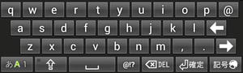

{kind=link}
nicoWnnG IMEは、Android OS上で動作する日本語入力IMEです。以下の特長を持っています。
- OpenWnn/nicoWnnベース
-
オープンソースソフトウェアであるOpenWnn/nicoWnnをベースとしています。オリジナルのnicoWnnが持っている「ニコタッチ入力」や「フリック入力」機能は、そのまま利用することができます。従来あった「ベル打ち」に加え、ドコモN/Pシリーズの入力方式により近づけた「２タッチ入力」を新たに搭載しています。
- 数字入りソフトフルキーボード
-
nicoWnnG IMEは、アルファベットだけでなく数字や各種記号も含めた全60キーのフルキーボードで入力することができます。横画面モードでの入力や、GALAXY Tabのようなタブレット型機種での使用を想定しています。
- JISかな・五十音かな配列
-
かな入力モードでは、QWERTY配列をそのまま利用したローマ字入力だけでなく、JISかな配列・五十音かな配列のキーボードを選ぶこともできます。
 これらの配列を選択しているときは、かな文字入力が可能なハードキーボードをUSBやbluetoothで接続することで、ハードキーボードからかな文字を入力することが可能です。
これらの配列を選択しているときは、かな文字入力が可能なハードキーボードをUSBやbluetoothで接続することで、ハードキーボードからかな文字を入力することが可能です。 - QWERTYミニ・コンパクトキーボード
-
画面の小さいスマートフォン型端末では、数字入りソフトフルキーボードでは入力が難しくなります。QWERTY配列を保ったまま、キー数を減らして１キーあたりの面積を大きくした「QWERTYミニキーボード」で入力することができます。
 「キーは大きくしたいが数字キーは欲しい」場合には、「QWERTYコンパクトキーボード」を選ぶことができます。「横画面で使うために縦方向を圧縮したい」場合には、「QWERTYミニ横キーボード」を選ぶことができます。
- フリック入力
-
従来あった「フリック入力」を拡張し、入力できる文字を増やしています。またキー刻印にフリック方向がわかるガイドを表示することができるなど、新規にフリック入力を覚えるための配慮も施しています。

- ２タッチ入力
-
従来あった「ベル入力」モードに加え、より実機に近づけた「２タッチ入力」モードを追加しています。ハードキーによる２タッチ入力にも対応しています。
- ハードキー対応
-
ハードQWERTYキーやハード12キーを持った端末で使用するための、豊富な対応モードを持っています。スライド式や着脱式などのハードキーを持った機種で「ハードキーで入力するとき、自動的にソフトキーボードのキー数を減らす」機能や、逆に「強制的にハードキーがある／ない状態として扱う」機能を利用することができます。
- マッシュルーム対応
-
Simejiで培われたプラグイン「マッシュルーム」に対応し、より多くの文字入力サポートを受けることができます。
- ユーザーシンボルキー
-
独自の[@!?]キー を持っており、ユーザーが自由に登録した単語を簡単に入力することができます。
- 柔軟なコンフィグレーション
-
キーボードや変換候補表示部分の表示高の変更、文字種キーを押したときのトグルの内容などを変更することができます。設定の多くは縦画面・横画面で個別に持つことができ、「自分の好み」を追求することができます。
{kind=link}
{kind=link}
{kind=link}